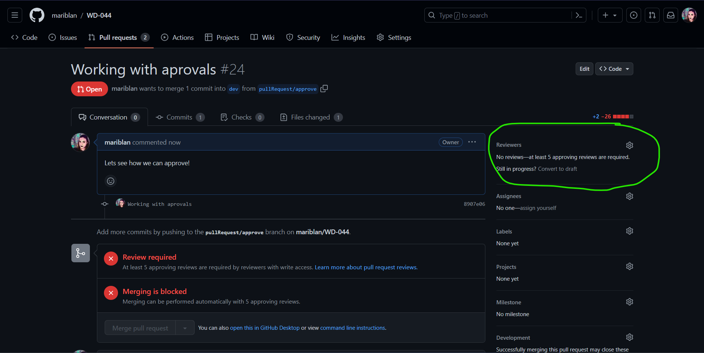
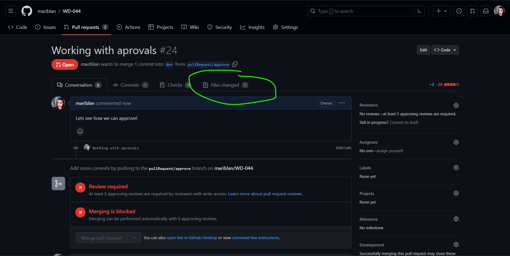
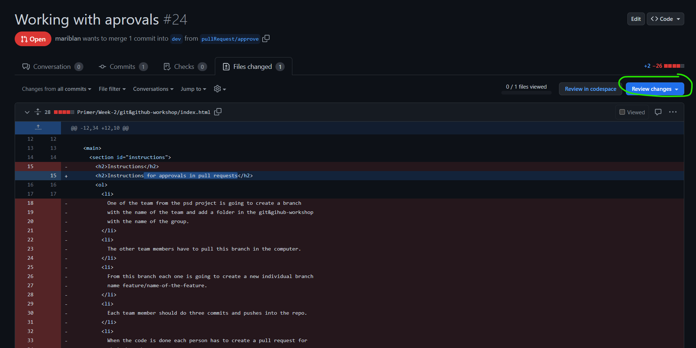
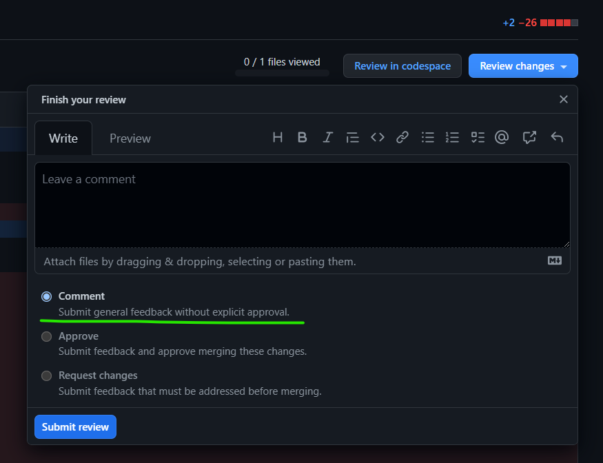
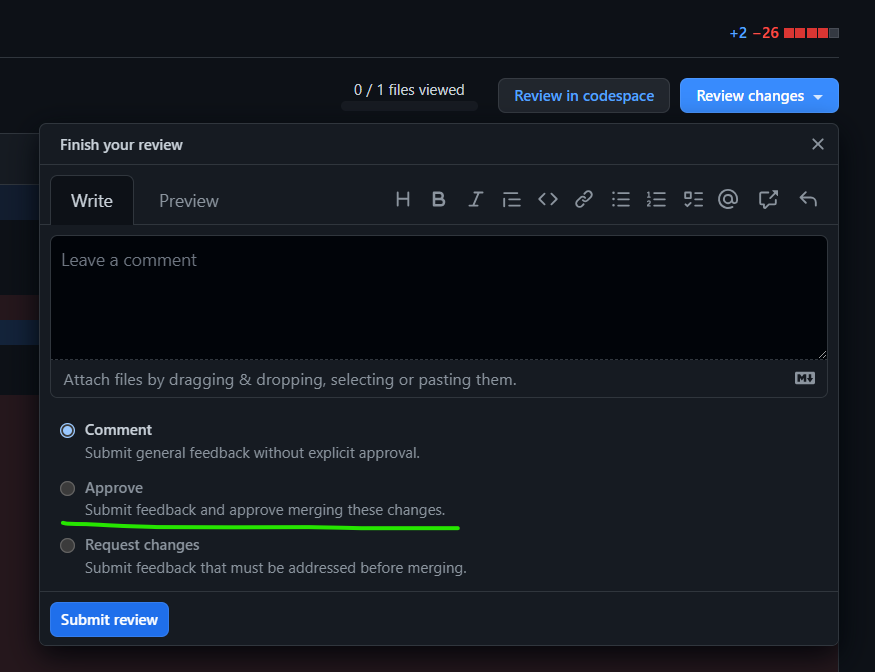
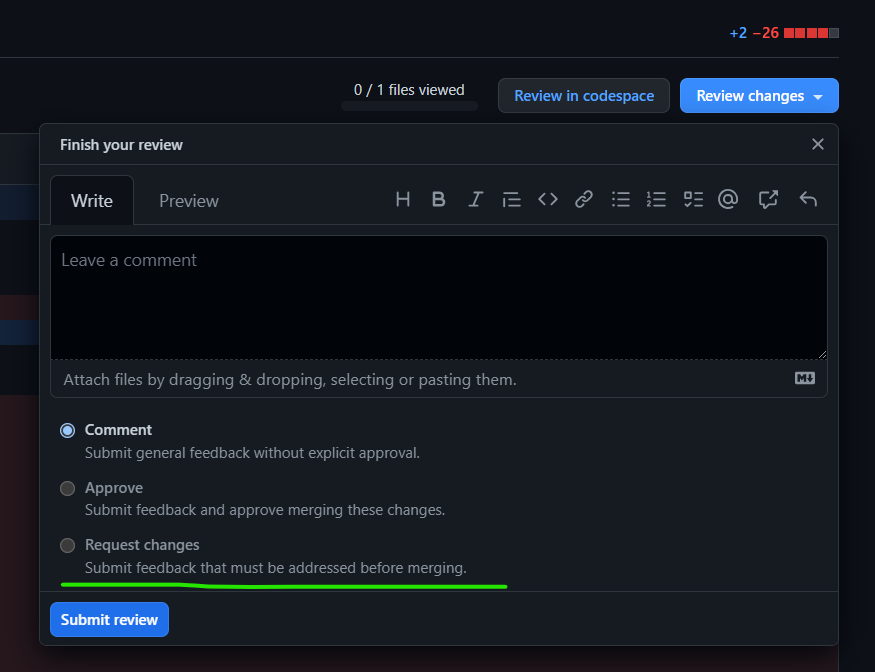
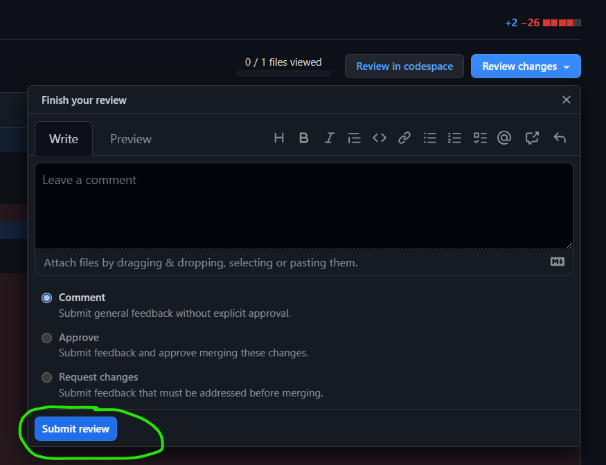

-
The person who creates the pull request adds the collaborators on
the Reviewers.

-
The Colaborators go to the Files changed and they can do
the review of the changes there and then approve.

-
Inside the Files changed there is the blue button
Review changes. Click on it to see the options.

-
Comment let's you leave feedback without approving or
forcing the person to do any actual changes.

-
Approve will automatically approve the pull request as it
is.

-
Request changes will let you give feedback that forces the
person who created the pull request to change the parts the
reviewr specified in the feedback.

-
Once you have selected one of the options, click on submit review.
